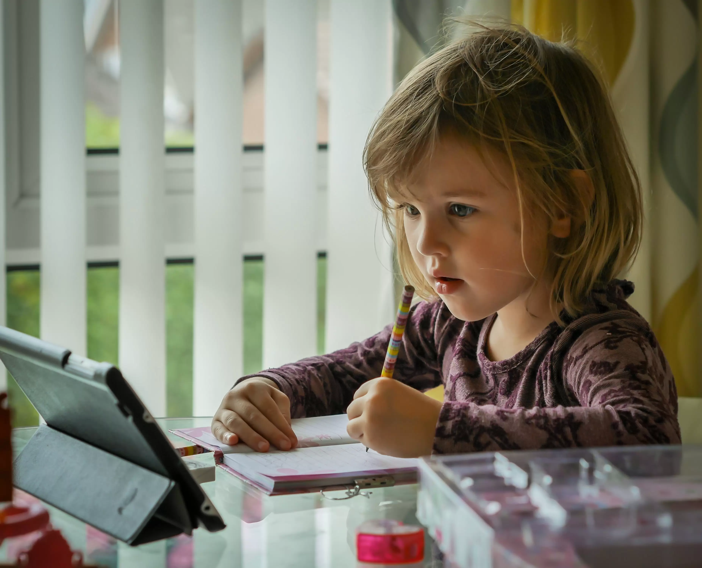
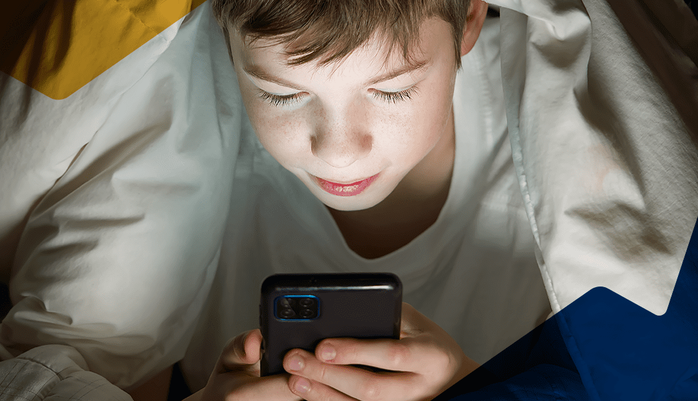

O constante crescimento da tecnologia e redes sociais, tem crescido cada vez mais.O uso desses meios de comunicação podem interferir no desenvolvimento pessoal e aquisição da linguagem em crianças de primeira infância. Para a amostra final foram incluídos 11 artigos, dentrhttps://www.termometrodapolitica.com.br/base/wp-content/uploads/c860e85a7d1c8992375e73dcb82e6128.jpege esses artigos 60% disseram que uso de tela quando não regulado provoca diversos impactos na saúde das crianças e em todo o seu desenvolvimento, os 20% relatam que crianças que ficam por muitas horas em telas, tem prejuízos na aquisição da linguagem e déficit na socialização, 20% apontam que crianças expostas a tela desde muito cedo podem enfrentar transtornos de desenvolvimento como TDAH. conclui-se que o uso de telas tem muito impacto na aquisição de linguagem e na comunicação de crianças de primeira infância. Portanto é essencial é aconselhável que tenhamos o uso equilibrado de telas.(Silva, M. T. S. L., & Barros, M. K. D. L. 2024)
A evolução da tecnologia causou algumas mudanças nos nossos hábitos, a partir do uso dos aparelhos tecnológicos, que estimulou um desenvolvimento da dependência com os dispositivos. Isso impactou nossa relação social com as pessoas. O uso excessivo da tecnologia, principalmente antes de dormir, pode ser associado com problemas de sono por conta da exposição à luz azul. Esse problema agrava principalmente os jovens adultos, os quais o vício na internet é maior, isso acaba afetando a saúde física, mental e até social. Os distúrbios do sono, que impedem um bom descanso, são influenciados por fatores psicológicos. Estudos dizem que mais de 60% dos alunos apresentam baixa qualidade de sono, sem contar que distúrbios como a insônia podem ser levados à obesidade. Os estudos analisados mostraram que o vício com a internet está associado a distúrbios do sono e transtornos mentais, por exemplo, ansiedade, depressão e TDAH, além de afetar o rendimento escolar e as relações familiares. O uso moderado da internet pode até prevenir sintomas de depressão, enquanto usada em excesso, pode ser considerada a maior inimiga do sono.(I. A.; GARCIA et al. 2024)

Um dos problemas psicológicos mais comuns causados pelo uso excessivo de celulares é a depressão, especialmente o uso das redes sociais, o ato de nos compararmos com outras pessoas da internet, fazendo-os pensar que a um atraso em relação às pessoas dessas redes, isso pode acarretar em depressão, ansiedade e afetar as relações pessoais.
O uso contínuo de celulares, computadores e outros dispositivos pode prejudicar a nossa saúde mental de muitas maneiras, podendo impulsionar o distanciamento social e causar dependência emocional. Um estudo realizado pela universidade de Lancaster revelou que o excesso no uso de dispositivos eletrônicos pode desencadear depressão e ansiedade. Outro estudo realizado pela Universidade da Pensilvânia mostrou que o forte uso desses dispositivos pode causar sentimentos como solidão, e inveja além de poder agravar o Transtorno do Déficit de Atenção e Hiperatividade (TDAH)(Michele W. Berger Writer. ?)